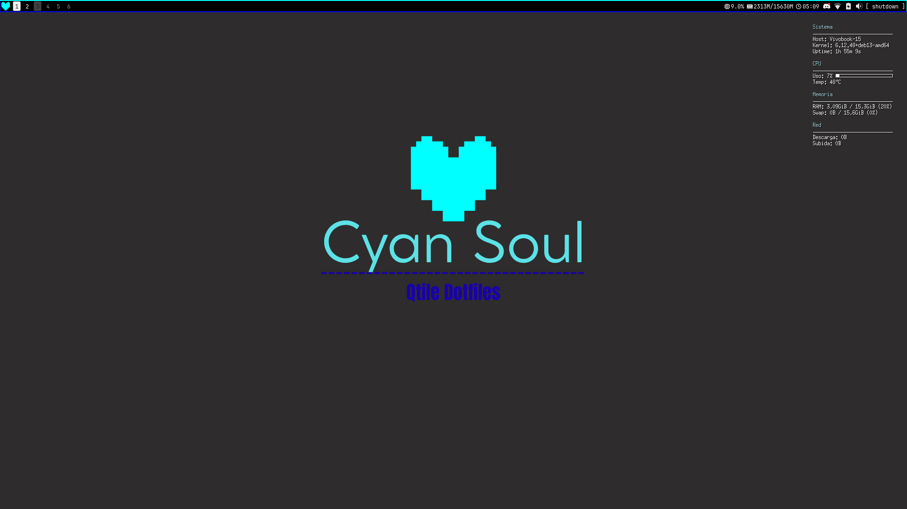
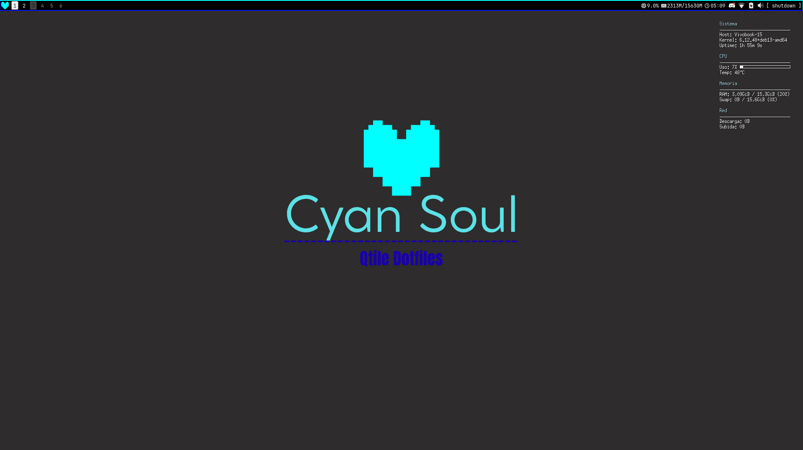

Sistema que estoy usando
Ultimamente no he probado muchas distros independientes, la verdad esque Debian y derivadas funcionan muy bien
De hecho estoy Ahora mismo con Debian 13 (trixie) con Qtile y mis dotfiles que estan en GitLab


Soy Antonio o tambien conocido como Antsoftware
y soy un obsesionado con linux y el software libre
Uso Linux desde hace casi 2 Años y aprendi mucho de sistemas por el camino
Quiero aprender varios lenguajes de programacion como Python, C, C++ y Rust
Y no he decidido todavia que ser de mayor, es dificil pues hay muchas cosas que me gustan, tal vez Hacker Etico o Ingeniero de Sistemas
Acá estaran todas mis redes sociales del momento y mi GitHub y GitLab donde ire subiendo mis proyectos
Ultimamente no he probado muchas distros independientes, la verdad esque Debian y derivadas funcionan muy bien
De hecho estoy Ahora mismo con Debian 13 (trixie) con Qtile y mis dotfiles que estan en GitLab
